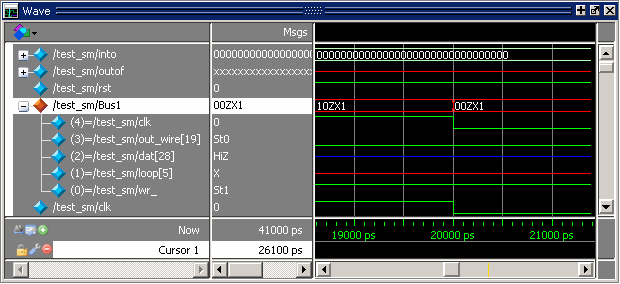

Virtual
objects are signal-like or region-like objects created in the GUI
that do not exist in the Questa SIM simulation
kernel.
Virtual objects
are indicated by an orange diamond as illustrated by Bus1 in Figure 1:
Figure 1. Virtual Objects Indicated by Orange Diamond